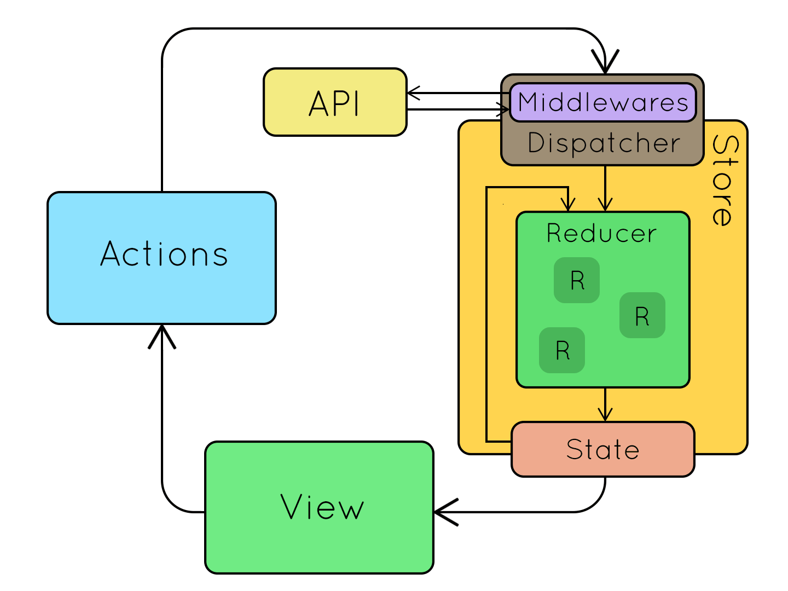

实际上之前听过群友说过这个东西，但是具体不知道什么作用的，大概想着也不会有用着的地方。但是在最近想要用 Reactive Native 来写一个 APP 的时候，突然发现，原来这是一个比较实用的神器的。所以，有必要来简单的学一下。这里不具体的介绍如何使用它，而是从上而下对其的工作的机制有一个大概的了解。
Redux 的中文网站 有详细的介绍。
基本的概念
Redux 是 一个专为 JavaScript 应用设计可预测的状态容器。我基本的限制就是将所有的状态（数据）放在一个统一的地方进行存储（Store），然后将此这些 State 暴露给所有的组件使用。
这样的话，就不会在各个组件（控件）间进行复杂的传值，依赖的解决等等。
首先先来一张图：

术语
上面的图中展示了几个概念：
- Action。行为（动作）是把数据从应用（译者注：这里之所以不叫 view 是因为这些数据有可能是服务器响应，用户输入或其它非 view 的数据 ）传到 store 的有效载荷。它是 store 数据的唯一来源。一般来说你会通过
store.dispatch()将 action 传到 store。 - Reducers 指定了应用状态的变化如何响应 actions 并发送到 store 的，记住 actions 只是描述了有事情发生了这一事实，并没有描述应用如何更新 state。 上图中， Store 会有一个总的 Reducers ，然后其可以是由多个小的 Reducer 进行组成的。
- Store ，负责将 Actions, Reducers，State 组合在一起。负责管理整个 State。调用 Reducers 等等。就我个人理解而言，其主要就是根据响应的 Action，然后来调用 Reducer ，更新 State 。通知订阅了此 State 的相关订阅者。其职能为：
- 维持应用的 state；
- 提供
getState()方法获取 state； - 提供
dispatch(action)方法更新 state； - 通过
subscribe(listener)注册监听器; - 通过
subscribe(listener)返回的函数注销监听器。
- Middleware。这个东西，位于 Store 和 Actions 之间。这个的设计主要是为了来进行异步的调用。在这里我们就可以进行一些副作用的操作，因为 Redux 强烈建议，不要在 Reducer 中进行任何有副作用的操作。可以有多个 Middleware，这里可以在拦截 Actions。
selectors
官方推荐是使用 Reselect 来进行创建。
Reselect 库可以创建可记忆的(Memoized)、可组合的 selector 函数。Reselect selectors 可以用来高效地计算 Redux store 里的衍生数据。
就比如，我们的组件应该都是关心 State 中的一部分数据，而不是全部都关注。因此，我们都会在 mapStateToProps 做一些运算，得出我们想要的数据，这个运算函数，我们将把个叫做 selectors 。但是，每次都进行重新计算，或当 State 的数据 过大，或者计算逻辑比较复杂的时候，就会有性能的损失。Reselect 就是为了让我们来干这活的。
这个抽空再看了。
创建可记忆的 Selector
Reselect 提供 createSelector 函数来创建可记忆的 selector。createSelector 接收一个 input-selectors 数组和一个转换函数作为参数。如果 state tree 的改变会引起 input-selector 值变化，那么 selector 会调用转换函数，传入 input-selectors 作为参数，并返回结果。如果 input-selectors 的值和前一次的一样，它将会直接返回前一次计算的数据，而不会再调用一次转换函数。
import { createSelector } from 'reselect' |
组合 Selector
可记忆的 selector 自身可以作为其它可记忆的 selector 的 input-selector。下面的 getVisibleTodos 被当作另一个 selector 的 input-selector，来进一步通过关键字（keyword）过滤 todos。
const getKeyword = state => state.keyword |
Middleware
相对于 Express 或者 Koa 的 middleware，Redux middleware 被用于解决不同的问题，但其中的概念是类似的。它提供的是位于 action 被发起之后，到达 reducer 之前的扩展点。 你可以利用 Redux middleware 来进行日志记录、创建崩溃报告、调用异步接口或者路由等等。
React Redux
这个玩意，是 Redux 专门为 React 所设计的库。简化了我们的使用。这个库的使用比较简单，关于再于其提供的 connect() 函数。其有两个关键的内容：
- Provider 这个组件，能让我们在整个应用的剩余部分 都能访问 Redux 的 Store。
connect()。这个函数能让我们的 React 组件，与 Redux 的 Store 连接起来。而不用我们手动进行绑定。
connect()
原型：
function connect(mapStateToProps?, mapDispatchToProps?, mergeProps?, options?) |
mapStateToProps?: (state, ownProps?) => Object
如果 mapStateToProps 是一个函数，那么 connect 执行后的组件将会订阅 Redux Store。这就意味着，每当 Store 进行了更新，这个函数就会被执行。mapStateToProps 的返回必须是一个简单对象，然后可以被合并到组件的 props 中。如果我们不想订阅 Store 的更新，那么就将此参数传递为 null 或者 undefined就行了。
同时，这个函数定义的参数个数决定了这个函数何时会被调用。
如果只有
state参数。那么 Store 更新时会调用，同时将 State 作为唯一的参数进行传递。const mapStateToProps = state => ({ todos: state.todos })
ownProps如果还有这个参数。在 Store 更新或者 组件收到新的props参数时都会被调用。const mapStateToProps = (state, ownProps) => ({
todo: state.todos[ownProps.id]
})
mapDispatchToProps?: Object | (dispatch, ownProps?) => Object`
这个参数比较复杂，其根据传递的参数，类型的不同而有不同的语义。
具体而言，对于 connect() 的这个参数，我们可以：不提供；提供一个对象；提供一个函数。
不提供
如果不提供这个参数，那么在我们 connect() 后的组件中，将会拥有一个属性 dispatch() ，我们可以用其来进行事件的派发。
提供一个函数
如果我们提供一个函数，这个参数最大可以拥有两个参数，而根据其拥有参数的不同，意义又是不一样的。
但是，无论是几个参数，最终我们提供的这个函数，其第一个参数都会是 dispatch()，而因此，我们可以在这个函数中调用此函数来进行事件的派发。
只有一个参数
const mapDispatchToProps = dispatch => { |
当然，我们也可以将其转发到一个 actionCreator
const mapDispatchToProps = dispatch => { |
有两个参数
如果函数有两个参数，那么第二个参数，将会是我们传递给 conenct() 中的 props ，而每当这个组件收到新的 prop 的时候，此函数都会被调用。
这就意味着，我们可能不是在组件进行重新渲染的时候重新绑定新的 props 到 action dispatchers，而是在 组件的 props 改变时干这个事情。
// Binds on component re-rendering |
// Binds on props change |
作为函数的返回值
mapDispatchToProps 函数必须返回纯对象：
- 这个对象中的所有字段都会被注入到我们的属性中，其值通常是一个被调用时会分发事件的函数。
- 如果作为值的函数中使用了 action creator ，那么一个约定就是将此函数的键命名来和 action creator 一致。
const increment = () => ({ type: 'INCREMENT' }) |
mapDispatchToProps 的返回值将会 合并 到我们 connect 后的组件的 props 中。我们就可以直接调用他进行事件的分发了。
bindActionCreators
如果我们来手动对这个函数进行处理，那么会比较麻烦。所以呢，Redux 提供了一个函数来简化我们的事情。
bindActionCreators 将一个对象中值是
action creators的对象转换为一个键相同，但是每个action creator都被一个dispatch()进行了包装的函数，这样我们就可以直接调用这个action creator的包装函数来分发事件了。
bindActionCreators 接收两个参数：
- 一个 函数（一个 action creator），或者是一对象（每个字段都是一个 action creator）
- dispatch
通过 bindActionCreators包装后的函数会自动的转发这些参数，因此我们不需要进行手动处理。
import { bindActionCreators } from 'redux' |
在我们的 mapDispatchToProps 这个参数中我们就可以这样使用：
import { bindActionCreators } from 'redux' |
mapDispatchToProps之前我们说过，如果我们提供了这个参数，那么就不会再收到默认的dispatch() 。我们可以手动他把他加在我们的 mapDispatchToProps 的返回中。虽然大多数时候我们不需要这样。
import { bindActionCreators } from 'redux' |
提供一个对象
我们在 React 中分发事件的流程其实也很传统：定义一个 action creator，然后将其包装在一个类似 (…args) => dispatch(actionCreator(…args)) 的函数中，然后将这个包装函数传递成为组件的属性。
因此呢，我们的 connect() 也支持将 mapDispatchToProps 传递为一个对象。如果我们传递的这个对象中都是 action creator，那么，connect() 会自动的调用 bindActionCreators。
官方推荐的就是，一直使用这个方式。
但是需要注意的是：
mapDispatchToProps 对象每个字段都被假设为一个 action creator
我们的组件不会再拥有一个
dispatchprop。
// React Redux does this for you automatically: |
因此，我们的 mapDIspatchToProps 可以简单写成这样：
const mapDispatchToProps = { |
总结
- 不提供 mapDispatchToProps ，store.dispatch 会注入到我们组件中 this.props.dispatch
- mapDispatchToProps 是一个完全由 action creator 组成的对象。那么将此对象中的所有
action creator放在一个包装函数中（可直接调用派发事件），注入到我们的组件中。this.props.action_creator_wrap_function … ，当然，这个名称由我们自己定。 - mapDispatchToProps 是一个函数。
mergeProps?: (stateProps, dispatchProps, ownProps) => Object
这个参数，这个决定了我们包装后的组件的属性是如何确定的。如果我们不提供这个参数，我们包装后的组件默认情况下将会拥有 { ...ownProps, ...stateProps, ...dispatchProps }
这个函数最多可以拥有三个参数：他们将会是mapStateToProps(), mapDispatchToProps() 的返回值，及包装后组件的 props。
statePropsdispatchPropsownProps
相当于在此对我们的组件最终拥有的属性进行一个过滤和选择。
options?: Object
connect() Returns
connect() 的返回值，是一个包装函数，其将我们的组件进行包装，包装后的组件会拥有一些由 connect() 注入的属性。
import { login, logout } from './actionCreators' |
大多数的情况下，这个包装函数都会被正确的调用，而不需要我们存储在一个临时变量中。
import { login, logout } from './actionCreators' |
使用示例
注入 dispatch，不监听 Store
export default connect()(TodoApp) |
注入所有的 action creator，但不监听 Store
import * as actionCreators from './actionCreators' |
注入dispatch和所有全局 State 的字段 （别这样干）
这样干会让任何的性能优化失效。因为每个状态的变更都会导致全部重新渲染。通常我们的做法是在不同的组件上，
connect()，并监听 State 中的一部分。
// don't do this! |
注入 dispatch 和 todos
function mapStateToProps(state) { |
注入 todos 和所有的 action creators
import * as actionCreators from './actionCreators' |
就所有的 action creators 注入成为一个属性
import * as actionCreators from './actionCreators' |
注入特定的 action creator
import { addTodo } from './actionCreators' |
以 mapDispatchToProps 是对象的形式注入 action creators
import { addTodo, deleteTodo } from './actionCreators' |
将不同的action creators 注入到不同的属性中（分组）
import * as todoActionCreators from './todoActionCreators' |
根据包装后的组件选择性的注入一些属性
import * as actionCreators from './actionCreators' |